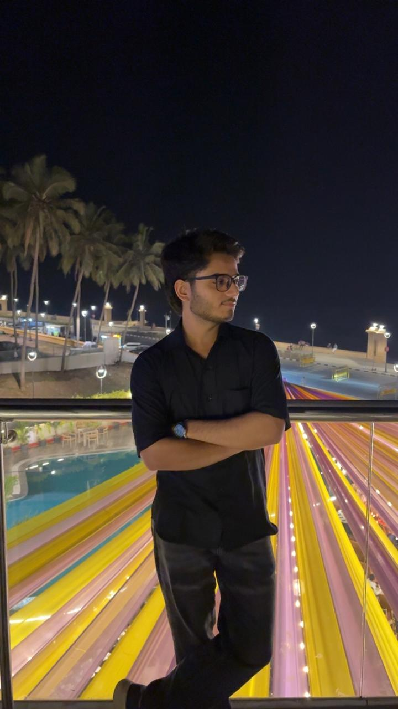

Devang Randeria
Web Developer Intern
I build innovative web and mobile solutions with a focus on
performance and user experience. With over 8 years of experience in
software development, I've helped companies transform their ideas into
successful digital products.


